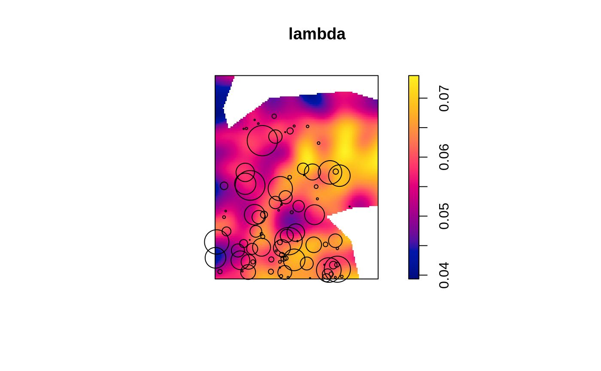
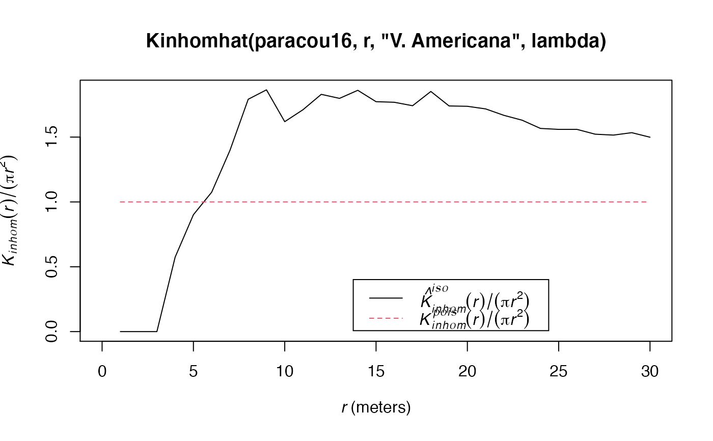

Estimation of the inhomogenous K function
Kinhomhat.RdEstimates the Kinhom function
Arguments
- X
A weighted, marked, planar point pattern (
wmppp.object).- r
A vector of distances. If
NULL, a sensible default value is chosen (512 intervals, from 0 to half the diameter of the window) following spatstat.- ReferenceType
One of the point types. Default is all point types.
- lambda
An estimation of the point pattern density, obtained by the
density.pppfunction.- CheckArguments
Logical; if
TRUE, the function arguments are verified. Should be set toFALSEto save time in simulations for example, when the arguments have been checked elsewhere.
Details
Kinhom is a cumulative, topographic measure of an inhomogenous point pattern structure.
By default, density estimation is performed at points by density.ppp using the optimal bandwith (bw.diggle). It can be calculated separately (see example), including at pixels if the point pattern is too large for the default estimation to succeed, and provided as the argument lambda:
Arbia et al. (2012) for example use another point pattern as a reference to estimate density.
Bivariate Kinhom is not currently supported.
References
Baddeley, A. J., J. Moller, et al. (2000). Non- and semi-parametric estimation of interaction in inhomogeneous point patterns. Statistica Neerlandica 54(3): 329-350.
Arbia, G., G. Espa, et al. (2012). Clusters of firms in an inhomogeneous space: The high-tech industries in Milan. Economic Modelling 29(1): 3-11.
See also
KinhomEnvelope, Kinhom
Examples
data(paracou16)
# Density of all trees
lambda <- density.ppp(paracou16, bw.diggle(paracou16))
plot(lambda)
# Reduce the point pattern to one type of trees
V.americana <- paracou16[paracou16$marks$PointType=="V. Americana"]
plot(V.americana, add=TRUE)
#> Plotting the first column of marks

# Calculate Kinhom according to the density of all trees
r <- 0:30
autoplot(Kinhomhat(paracou16, r, "V. Americana", lambda), ./(pi*r^2) ~ r)
